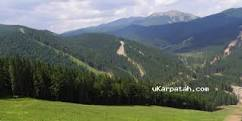
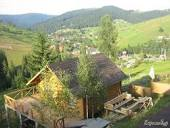
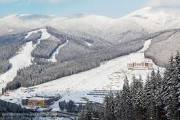
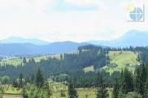

Рятувальна служба
Яремчанський АРП
(03434) 2-22-04, 4-41-65
Ворохтянський АРП
(03434) 4-11-49, 4-13-97
Яблуниця
Яблуниця розташована на відстані 35 км від міста Яремче, на висоті до 960 м над рівнем моря. Селом проходить автотраса Р-03 (Львів — Івано-Франківськ — Мукачеве). Клімат помірно континентальний, вологий. Зима помірно холодна, з морозами до -15ºС. Сніговий покрив зберігається протягом усієї зими, а в улоговинах і затінених місцинах — до травня. Літо тепле, переважає ясна погода. Середня температура повітря вдень — 20-23ºС, ночі прохолодні. Іонізоване повітря сприяє зміцненню організму. Яблуниця відома серед прихильників зимового туризму завдяки великій кількості схилів для катання взимку. Тут обладнані траси різної складності, працюють пункти прокату гірськолижного спорядження. Зі села відкриваються чудові краєвиди на Чорногірський хребет: Говерла (2061 м), Петрос (2020 м); Горгани: Синяк, Хом'як, Довбушанка (1754 м); Свидовецький хребет: Стіг (1703 м), Близниці (1883 м).
   